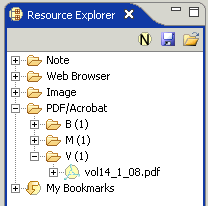
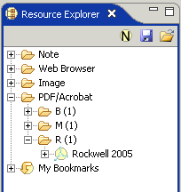
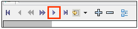
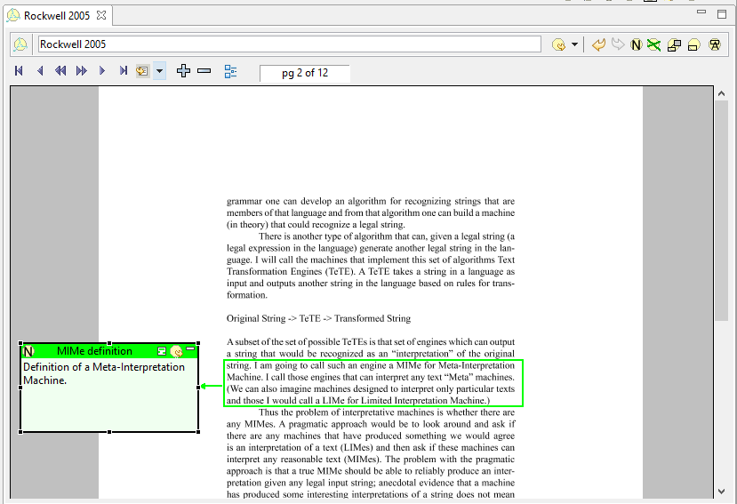
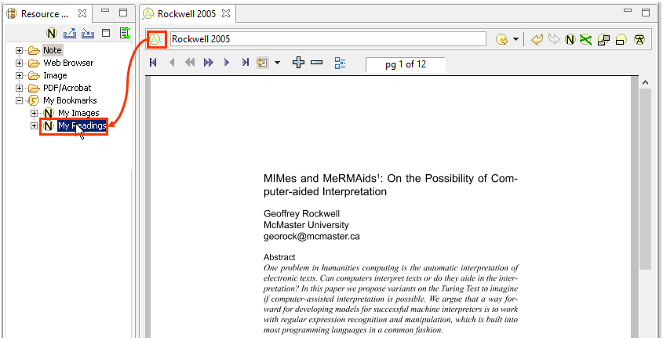
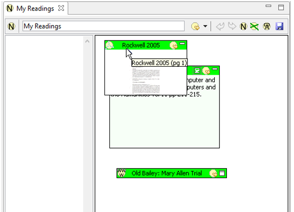

|
|
Much scholarly work focuses on texts, and Pliny recognises this by providing embedded support for annotating PDF (Acrobat) files. Acrobat files are widely used as a publication format and scholarly materials could be published in PDF format. There are, for example, ways to take TEI texts and produce PDF/Acrobat formats from them. Furthermore, the presentation of the text in a PDF file is generally considered stable and reliable -- a page of a PDF document will normally look essentially the same on a range of different computers and computer platforms.
Pliny comes with an embedded PDF annotation tool that allows you to annotate PDF documents. It takes a PDF file as if it were a sequence of images -- one for each page. In the same way that a user can use Pliny's image annotator to annotate an image, they can use its PDF annotation tool to annotate pages of a PDF file.
Note: Pliny's annotation tool for PDF files is built on top of the open-source version of a PDF viewer from JPedal. We have also been granted permission to include the pjes.jar library which allows the annotator to display a PDF file's embedded fonts. Many thanks to IDRsolutions who have made an open-source version of their viewer available, and kindly allowed us to include the pjes.jar library.
To use the PDF annotation editor in Pliny on an PDF file one must first associate the tool with the PDF file you wish to annotate -- the file because a Pliny resource, and the process is called "importing a PDF file into Pliny". If you have read the Image annotation tutorial, you might recall that you needed to import images into Pliny too -- the idea is similar. To import a PDF file so that you can annotate it, you must identify the file you want to import in one of three ways, and drag it to the PDF/Acrobat folder in the Resource Explorer:
These three options are illustrated here:

In all three cases a copy of the PDF file will be cached in Pliny's storage area for its internal use, and the file will open in Pliny's embedded PDF viewer.
You will see how things look in the embedded PDF viewer in a moment, but first we should see the result of our action within the Resource Explorer. Suppose that we wish to annotate Geoffrey Rockwell's article "MIMes and MeRMAids: On the Possibility of Computer-aider Interpretation" (Text Technology journal, November 1, 2005: http://texttechnology.mcmaster.ca/pdf/vol14_1_08.pdf). Once we have it open in Pliny's embedded web browser we can drag the item to the PDF/Acrobat folder so that Pliny can set it up for us -- caching the PDF file we have identified, and creating a Pliny resource for it. Then, if we open the Resource Explorer's PDF/Acrobat folder we will see something like the following:

Pliny cannot see the name of the article as it is displayed to us the PDF file, so it can only use the filename itself as the name of the resource. Let us change this to something more meaningful, say, "Rockwell 2005". We click on the current resource name which allows us to edit it, and then we type in the new name. When we are done and push the "Return" key to indicate that the editing is complete the Resource Explorer will refresh the contents to display the new name:

Now let us turn to the main editor area in Pliny, which will be showing us the first page of this PDF file.
As mentioned earlier, Pliny's embedded PDF viewer is derived from the JPedal PDF viewer software. There is a lot to do to get JPedal's PDF viewer started with most PDF files so it may take a moment or so before the first page appears. Please be patient.
When the PDF viewer does start up it will look like this:

The PDF annotator has two toolbars. The lower one, labelled here "Navigation Toolbar", is inherited from the JPedal viewer and is the navigation toolbar -- PDF files contain pages, and this tool bar allows you to navigate through the collection of pages. The upper toolbar is the Pliny toolbar that we have seen with other annotators. Within it, labelled here "Annotation Toolbar", are the tools you will use to create annotations in the PDF file. See the description of all the buttons in the toolbars within the reference section for the PDF annotator.
Suppose we read the first page and decide it is time to move on to the second. The navigation toolbar's "advance page button" is the one to click:

Page 2 is now being shown. Suppose that as we read it we decided to
add an annotation that draws attention to Rockwell's definition of a
"Meta-Interpretation Machine". This time we are doing an annotation and we
select the Make Annotation button from the annotation toolbar ( ) (Keyboard shortcut: F7), and draw out
the area where we want the anchor to go. Then we record or observation in the
note provided, and drag the note to a place in the margin of the page so that
it is out of the way, resulting in something like this:
) (Keyboard shortcut: F7), and draw out
the area where we want the anchor to go. Then we record or observation in the
note provided, and drag the note to a place in the margin of the page so that
it is out of the way, resulting in something like this:

Of course, we can add as many anchors, notes, etc to the page as we wish. Since PDF files are paged, each note, anchor and connection is tied to the page on which it was created and will reappear only whenever the appropriate page is viewed. Furthermore, if we use the mechanisms Pliny provides to follow a link from a note (such as "MIMe definition") to the resource on which it appears we will find that Pliny not only opens the PDF file it knows as "Rockwell 2005", but also moves to the page containing the particular note reference -- here the second page.
Now that we have read Rockwell's article it is time to store a reference to it in the "My Readings" note. Doing this constitutes an example of saving a reference of one kind of resource (here a PDF file) in another kind of resource (a Pliny Note).
In the tutorial Using Pliny with Images we created a My Images note to store references to images that we have studied, and used drag and drop from the Image item in the Resource Explorer to the My Images note's reference area to deposit a reference there. We could do exactly the same thing here if that was convenient. However, here will will use drag and drop in the opposite direction to achieve more or less the same result -- we will drag the PDF annotation tool's drag source object to the Resource Explorer to create the reference in our pre-existing "My Readings" note.
We recall that our note to hold references to things we have read (called My Readings, and created in an earlier tutorial) is bookmarked, so we can open the My Bookmarks object in the Resource Explorer to find a reference to it there. All we have to do is pick up the PDF annotation tool's drag source object and drag it to My Readings:

When the My Readings item receives the drop it recognises it as a request to create a reference in its reference area. If we now open My Readings by double clicking on it we can see the reference that was created:

We can see the reference to our PDF file has been indeed been dropped into My Reading's reference area, but Pliny doesn't know where to put the new reference in the area and arbitrarily places it near the top left corner. Having now opened My Readings, we can now move this reference for Rockwell 2005 to somewhere more appropriate. Note as well in the illustration above that we have placed the pointer to point at the new reference so you can see the tooltip display associated with the item, and that this display shows as Rockwell 2005 (pg 1). From this we can learn something else about references to PDF documents: they contain a reference not only to the PDF document, but also to a particular page in the document. Since the PDF viewer was showing page one of the document when we dragged its drag source object in to create the reference, the reference is to the first page. If, however, the viewer had been showing a different page of the document, the reference would have been to that page. Finally, we can also see that Pliny is put a thumbnail-sized image of the PDF document's first page in the content area of the reference object.
Pliny supports the annotation of PDF/Acrobat resources. PDF resources, in turn, can be created from files held on your hard disk, or harvested from PDF documents fetched from the WWW. You work with PDF files as Pliny resources using Pliny's embedded PDF viewer/annotator. PDF files usually contain more than one page, and the PDF/Acrobat annotation tool provides a Navigation Toolbar which allows you to view different pages. Annotations can be put on any page in a PDF document, and otherwise the annotator works in a way similar to the image annotator: it combines note taking with the ability to link a note to a spot on the page by means of an anchor. PDF resources appear in the Resource Explorer in the PDF/Acrobat folder, but you can use the Bookmarks and similar facilities provided to manage notes as a way to file PDF resources according to a scheme that suits your particular needs.
 |
| Pliny Help Pages by John Bradley are licensed under a Creative Commons Attribution-Noncommercial-Share Alike 2.0 UK: England & Wales License. |